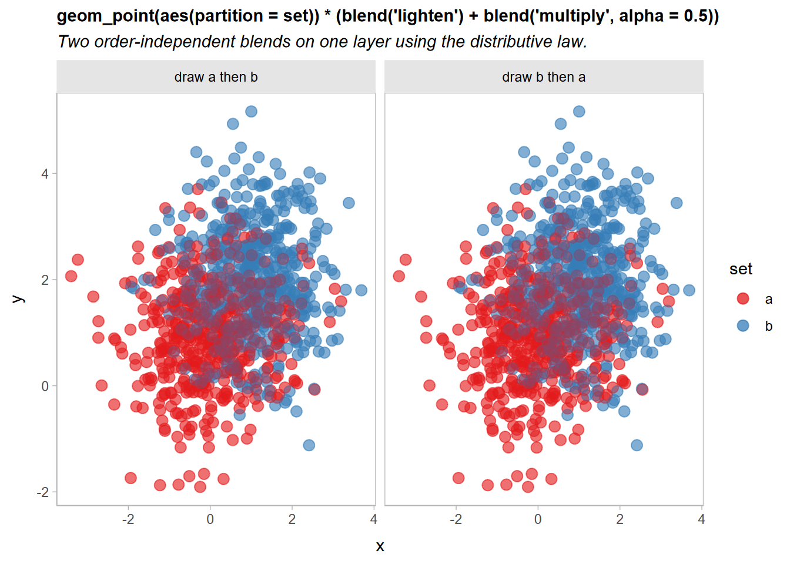
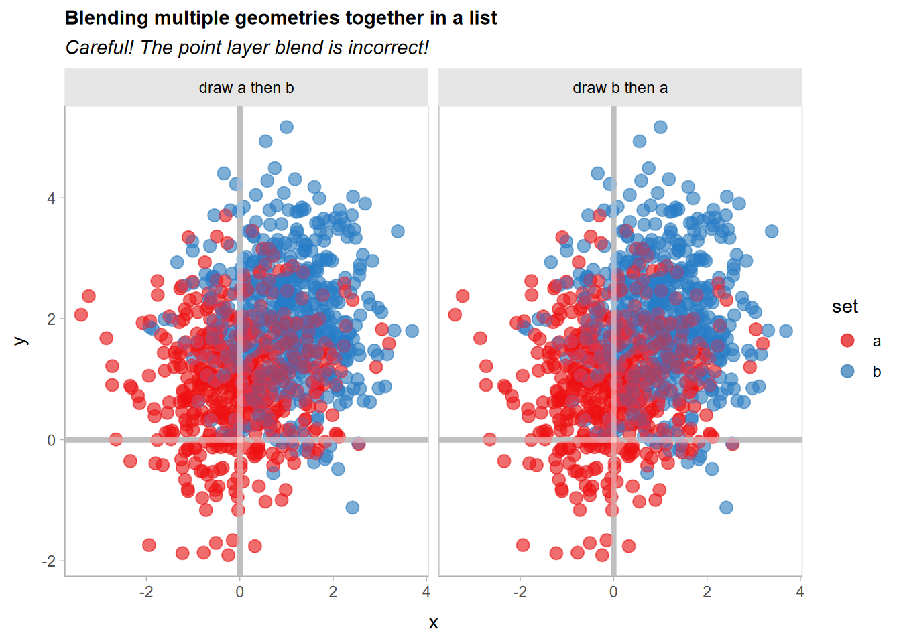
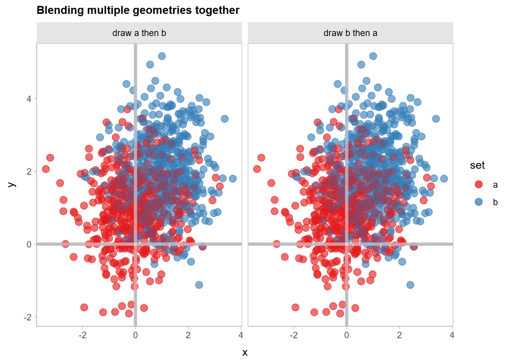
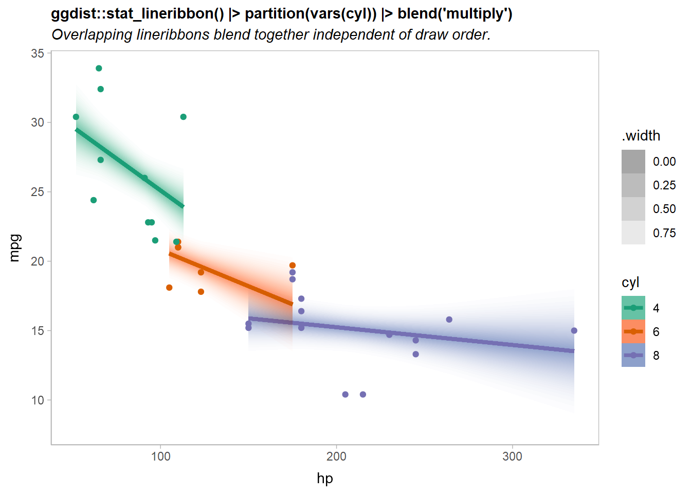
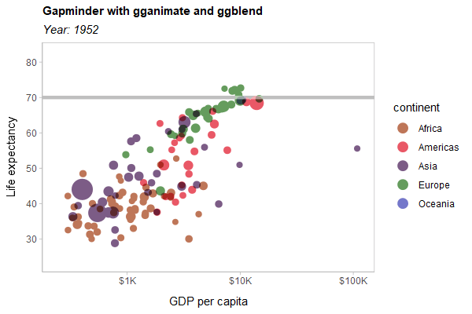

ggblend is a small algebra of operations for blending, copying, adjusting, and compositing layers in ggplot2. It allows you to easily copy and adjust the aesthetics or parameters of an existing layer, to partition a layer into multiple pieces for re-composition, and to combine layers (or partitions of layers) using blend modes (like "multiply", "overlay", etc).
ggblend requires R ≥ 4.2, as blending and compositing support was added in that version of R.
Installation
You can install the development version of ggblend using:
remotes::install_github("mjskay/ggblend")Blending within one geometry
We’ll construct a simple dataset with two semi-overlapping point clouds. We’ll have two versions of the dataset: one with all the "a" points listed first, and one with all the "b" points listed first.
library(ggplot2)
library(ggblend)
theme_set(ggdist::theme_ggdist() + theme(
plot.title = element_text(size = rel(1), lineheight = 1.1, face = "bold"),
plot.subtitle = element_text(face = "italic"),
panel.border = element_rect(color = "gray75", fill = NA)
))
set.seed(1234)
df_a = data.frame(x = rnorm(500, 0), y = rnorm(500, 1), set = "a")
df_b = data.frame(x = rnorm(500, 1), y = rnorm(500, 2), set = "b")
df_ab = rbind(df_a, df_b) |>
transform(order = "draw a then b")
df_ba = rbind(df_b, df_a) |>
transform(order = "draw b then a")
df = rbind(df_ab, df_ba)A typical scatterplot of such data suffers from the problem that how many points appear to be in each group depends on the drawing order (a then b versus b then a):
df |>
ggplot(aes(x, y, color = set)) +
geom_point(size = 3, alpha = 0.5) +
scale_color_brewer(palette = "Set1") +
facet_grid(~ order) +
labs(title = "geom_point() without blending", subtitle = "Draw order matters.")
A commutative blend mode, like "multiply" or "darken", is one potential solution that does not depend on drawing order. We can apply a blend() operation to geom_point()` to achieve this. There three ways to do this:
-
blend(geom_point(...), "multiply")(normal function application) -
geom_point(...) |> blend("multiply")(piping) -
geom_point(...) * blend("multiply")(algebraic operations)
Function application and piping are equivalent. In this case, all three approaches are equivalent. As we will see later, the multiplication approach is useful when we want a shorthand for applying the same operation to multiple layers in a list without combining those layers first (in other words, multiplication of operations over layers is distributive in an algebraic sense).
df |>
ggplot(aes(x, y, color = set)) +
geom_point(size = 3, alpha = 0.5) |> blend("multiply") +
scale_color_brewer(palette = "Set1") +
facet_grid(~ order) +
labs(
title = "geom_point(alpha = 0.5) |> blend('multiply')",
subtitle = "Draw order does not matter, but color is too dark."
)
Now the output is identical no matter the draw order, although the output is quite dark.
Partitioning layers
Part of the reason the output is very dark above is that all of the points are being multiply-blended together. When many objects (here, individual points) are multiply-blended on top of each other, the output tends to get dark very quickly.
However, we really only need the two sets to be multiply-blended with each other. Within each set, we can use regular alpha blending. To do that, we can partition the geometry by set and then blend. Each partition will be blended normally within the set, and then the resulting sets will be multiply-blended together just once:
df |>
ggplot(aes(x, y, color = set)) +
geom_point(size = 3, alpha = 0.5) |> partition(vars(set)) |> blend("multiply") +
scale_color_brewer(palette = "Set1") +
facet_grid(~ order) +
labs(
title = "geom_point(alpha = 0.5) |> partition(vars(set)) |> blend('multiply')",
subtitle = "Light outside the intersection, but still dark inside the intersection."
)That’s getting there: points outside the intersection of the two sets look good, but the intersection is still a bit dark.
Let’s try combining two blend modes to address this: we’ll use a "lighten" blend mode (which is also commutative) to make the overlapping regions lighter, and then draw the "multiply"-blended version on top at an alpha of less than 1:
df |>
ggplot(aes(x, y, color = set)) +
geom_point(size = 3, alpha = 0.5) |> partition(vars(set)) |> blend("lighten") +
geom_point(size = 3, alpha = 0.5) |> partition(vars(set)) |> blend("multiply", alpha = 0.5) +
scale_color_brewer(palette = "Set1") +
facet_grid(~ order) +
labs(
title =
"geom_point(size = 3, alpha = 0.5) |> partition(vars(set)) |> blend('lighten') + \ngeom_point(size = 3, alpha = 0.5) |> partition(vars(set)) |> blend('multiply', alpha = 0.5)",
subtitle = 'A good compromise, but a long specification.'
) +
theme(plot.subtitle = element_text(lineheight = 1.2))Now it’s a little easier to see both overlap and density, and the output remains independent of draw order.
However, it is a little verbose to need to copy out a layer multiple times:
geom_point(size = 3, alpha = 0.5) |> partition(vars(set)) * blend("lighten") +
geom_point(size = 3, alpha = 0.5) |> partition(vars(set)) * blend("multiply", alpha = 0.5) +We can simplify this is two ways: first, partition(vars(set)) is equivalent to setting aes(partition = set), so we can move the partition specification into the global plot aesthetics, since it is the same on every layer.
Second, operations and layers in ggblend act as a small algebra. Operations and sums of operations can be multiplied by layers and lists of layers, and those operations are distributed over the layers (This is where * and |> differ: |> does not distribute operations like blend() over layers, which is useful if you want to use a blend to combine multiple layers together, rather than applying that blend to each layer individually).
Thus, we can “factor out” geom_point(size = 3, alpha = 0.5) from the above expression, yielding this:
geom_point(size = 3, alpha = 0.5) * (blend("lighten") + blend("multiply", alpha = 0.5))Both expressions are equivalent. Thus we can rewrite the previous example like so:
df |>
ggplot(aes(x, y, color = set, partition = set)) +
geom_point(size = 3, alpha = 0.5) * (blend("lighten") + blend("multiply", alpha = 0.5)) +
scale_color_brewer(palette = "Set1") +
facet_grid(~ order) +
labs(
title = "geom_point(aes(partition = set)) * (blend('lighten') + blend('multiply', alpha = 0.5))",
subtitle = "Two order-independent blends on one layer using the distributive law."
) +
theme(plot.subtitle = element_text(lineheight = 1.2))
Blending multiple geometries
We can also blend geometries together by passing a list of geometries to blend(). These lists can include already-blended geometries:
df |>
ggplot(aes(x, y, color = set, partition = set)) +
list(
geom_point(size = 3, alpha = 0.5) * (blend("lighten") + blend("multiply", alpha = 0.5)),
geom_vline(xintercept = 0, color = "gray75", linewidth = 1.5),
geom_hline(yintercept = 0, color = "gray75", linewidth = 1.5)
) |> blend("hard.light") +
scale_color_brewer(palette = "Set1") +
facet_grid(~ order) +
labs(
title = "Blending multiple geometries together in a list",
subtitle = "Careful! The point layer blend is incorrect!"
)
Whoops!! If you look closely, the blending of the geom_point() layers appears to have changed. Recall that this expression:
geom_point(size = 3, alpha = 0.5) * (blend("lighten") + blend("multiply", alpha = 0.5))Is equivalent to specifying two separate layers, one with blend("lighten") and the other with blend("multiply", alpha = 0.65)). Thus, when you apply |> blend("hard.light") to the list() of layers, it will use a hard light blend mode to blend these two layers together, when previously they would be blended using the normal (or "over") blend mode.
We can gain back the original appearance by blending these two layers together with |> blend() prior to applying the hard light blend:
df |>
ggplot(aes(x, y, color = set, partition = set)) +
list(
geom_point(size = 3, alpha = 0.5) * (blend("lighten") + blend("multiply", alpha = 0.5)) |> blend(),
geom_vline(xintercept = 0, color = "gray75", linewidth = 1.5),
geom_hline(yintercept = 0, color = "gray75", linewidth = 1.5)
) |> blend("hard.light") +
scale_color_brewer(palette = "Set1") +
facet_grid(~ order) +
labs(title = "Blending multiple geometries together")
Partitioning and blending lineribbons
Another case where it’s useful to have finer-grained control of blending within a given geometry is when drawing overlapping uncertainty bands. Here, we’ll show how to use blend() with stat_lineribbon() from ggdist to create overlapping gradient ribbons depicting uncertainty.
We’ll fit a model:
m_mpg = lm(mpg ~ hp * cyl, data = mtcars)And generate some confidence distributions for the mean using distributional:
predictions = unique(mtcars[, c("cyl", "hp")])
predictions$mu_hat = with(predict(m_mpg, newdata = predictions, se.fit = TRUE),
distributional::dist_student_t(df = df, mu = fit, sigma = se.fit)
)
predictions## cyl hp mu_hat
## Mazda RX4 6 110 t(28, 20.28825, 0.7984429)
## Datsun 710 4 93 t(28, 25.74371, 0.8818612)
## Hornet Sportabout 8 175 t(28, 15.56144, 0.8638133)
## Valiant 6 105 t(28, 20.54952, 0.8045354)
## Duster 360 8 245 t(28, 14.66678, 0.9773475)
## Merc 240D 4 62 t(28, 28.58736, 1.21846)
## Merc 230 4 95 t(28, 25.56025, 0.9024699)
## Merc 280 6 123 t(28, 19.60892, 0.842354)
## Merc 450SE 8 180 t(28, 15.49754, 0.8332276)
## Cadillac Fleetwood 8 205 t(28, 15.17801, 0.7674501)
## Lincoln Continental 8 215 t(28, 15.05021, 0.7866649)
## Chrysler Imperial 8 230 t(28, 14.85849, 0.8606705)
## Fiat 128 4 66 t(28, 28.22044, 1.12188)
## Honda Civic 4 52 t(28, 29.50466, 1.491467)
## Toyota Corolla 4 65 t(28, 28.31217, 1.145154)
## Toyota Corona 4 97 t(28, 25.37679, 0.9280143)
## Dodge Challenger 8 150 t(28, 15.88096, 1.077004)
## Porsche 914-2 4 91 t(28, 25.92718, 0.8665404)
## Lotus Europa 4 113 t(28, 23.9091, 1.262843)
## Ford Pantera L 8 264 t(28, 14.42394, 1.166062)
## Ferrari Dino 6 175 t(28, 16.89163, 1.550885)
## Maserati Bora 8 335 t(28, 13.5165, 2.045807)
## Volvo 142E 4 109 t(28, 24.27603, 1.162526)A basic plot based on examples in vignette("freq-uncertainty-vis", package = "ggdist") and vignette("lineribbon", package = "ggdist") may have issues when lineribbons overlap:
predictions |>
ggplot(aes(x = hp, fill = ordered(cyl), color = ordered(cyl))) +
ggdist::stat_lineribbon(
aes(ydist = mu_hat, fill_ramp = after_stat(.width)),
.width = ppoints(40)
) +
geom_point(aes(y = mpg), data = mtcars) +
scale_fill_brewer(palette = "Set2") +
scale_color_brewer(palette = "Dark2") +
ggdist::scale_fill_ramp_continuous(range = c(1, 0)) +
labs(
title = "ggdist::stat_lineribbon()",
subtitle = "Overlapping lineribbons obscure each other.",
color = "cyl", fill = "cyl", y = "mpg"
)Notice the overlap of the orange (cyl = 6) and purple (cyl = 8) lines.
If we add a partition = cyl aesthetic mapping, we can blend the geometries for the different levels of cyl together with a blend() call around ggdist::stat_lineribbon().
There are many ways we could add the partition to the plot:
- Add
partition = cylto the existingaes(...)call. However, this leaves the partitioning information far from the call toblend(), so the relationship between them is less clear. - Add
aes(partition = cyl)to thestat_lineribbon(...)call. This is a more localized change (better!), but will raise a warning ifstat_lineribbon()itself does not recognized thepartitionaesthetic. - Add
|> adjust(aes(partition = cyl))afterstat_lineribbon(...)to add thepartitionaesthetic to it (this will bypass the warning). - Add
|> partition(vars(cyl))afterstat_lineribbon(...)to add thepartitionaesthetic. This is an alias for theadjust()approach that is intended to be clearer. It takes a specification for a partition that is similar tofacet_wrap(): either a one-sided formula or a call tovars().
Let’s try the fourth approach:
predictions |>
ggplot(aes(x = hp, fill = ordered(cyl), color = ordered(cyl))) +
ggdist::stat_lineribbon(
aes(ydist = mu_hat, fill_ramp = after_stat(.width)),
.width = ppoints(40)
) |> partition(vars(cyl)) |> blend("multiply") +
geom_point(aes(y = mpg), data = mtcars) +
scale_fill_brewer(palette = "Set2") +
scale_color_brewer(palette = "Dark2") +
ggdist::scale_fill_ramp_continuous(range = c(1, 0)) +
labs(
title = "ggdist::stat_lineribbon() |> partition(vars(cyl)) |> blend('multiply')",
subtitle = "Overlapping lineribbons blend together independent of draw order.",
color = "cyl", fill = "cyl", y = "mpg"
) 
Now the overlapping ribbons are blended together.
Highlighting geoms using copy_under()
A common visualization technique to make a layer more salient (especially in the presence of many other competing layers) is to add a small outline around it. For some geometries (like geom_point()) this is easy; but for others (like geom_line()), there’s no easy way to do this without manually copying the layer.
ggblend’s layer algebra makes this straightforward using the adjust() operation combined with operator addition and multiplication. For example, given a layer like:
geom_line(linewidth = 1)To add a white outline, you might want something like:
However, we’d rather not have to write the geom_line() specification twice If we factor out the differences between the first and second layer, we can use the adjust() operation (which lets you change the aesthetics and paremeters of a layer) along with the distributive law to factor out geom_line(linewidth = 1) and write the above specification as:
The copy_under(...) operation, which is a synonym for adjust(...) + 1, also implements this pattern:
geom_line(linewidth = 1) * copy_under(color = "white", linewidth = 2.5)Here’s an example highlighting the fit lines from our previous lineribbon example:
predictions |>
ggplot(aes(x = hp, fill = ordered(cyl), color = ordered(cyl))) +
ggdist::stat_ribbon(
aes(ydist = mu_hat, fill_ramp = after_stat(.width)),
.width = ppoints(40)
) |> partition(vars(cyl)) |> blend("multiply") +
geom_line(aes(y = median(mu_hat)), linewidth = 1) |> copy_under(color = "white", linewidth = 2.5) +
geom_point(aes(y = mpg), data = mtcars) +
scale_fill_brewer(palette = "Set2") +
scale_color_brewer(palette = "Dark2") +
ggdist::scale_fill_ramp_continuous(range = c(1, 0)) +
labs(
title = "geom_line() |> copy_under(color = 'white', linewidth = 2.5)",
subtitle = "Highlights the line layer without manually copying its specification.",
color = "cyl", fill = "cyl", y = "mpg"
) Note that the implementation of copy_under(...) is simply a synonym for adjust(...) + 1; we can see this if we look at copy_under() itself:
## <operation>: (adjust() + 1)In fact, not that it is particularly useful, but addition and multiplication of layer operations is expanded appropriately:
(adjust() + 3) * 2## <operation>: (adjust() + 1 + 1 + 1 + adjust() + 1 + 1 + 1)I hesitate to imagine what that feature might be useful for…
Compatibility with other packages
In theory ggblend should be compatible with other packages, though in more complex cases (blending lists of geoms or using the partition aesthetic) it is possible it may fail, as these features are a bit more hackish. I have done some testing with a few other layer-manipulating packages—including gganimate, ggnewscale, and relayer—and they appear to be compatible.
As a hard test, here is all three features applied to a modified version of the Gapminder example used in the gganimate documentation:
library(gganimate)
library(gapminder)
p = ggplot(gapminder, aes(gdpPercap, lifeExp, size = pop, color = continent, partition = continent)) +
list(
geom_point(show.legend = c(size = FALSE)) |> blend("multiply"),
geom_hline(yintercept = 70, linewidth = 2.5, color = "gray75")
) |> blend("hard.light") +
scale_color_manual(values = continent_colors) +
scale_size(range = c(2, 12)) +
scale_x_log10() +
labs(
title = 'Gapminder with gganimate and ggblend',
subtitle = 'Year: {frame_time}',
x = 'GDP per capita',
y = 'life expectancy'
) +
transition_time(year) +
ease_aes('linear')
animate(p, type = "cairo")